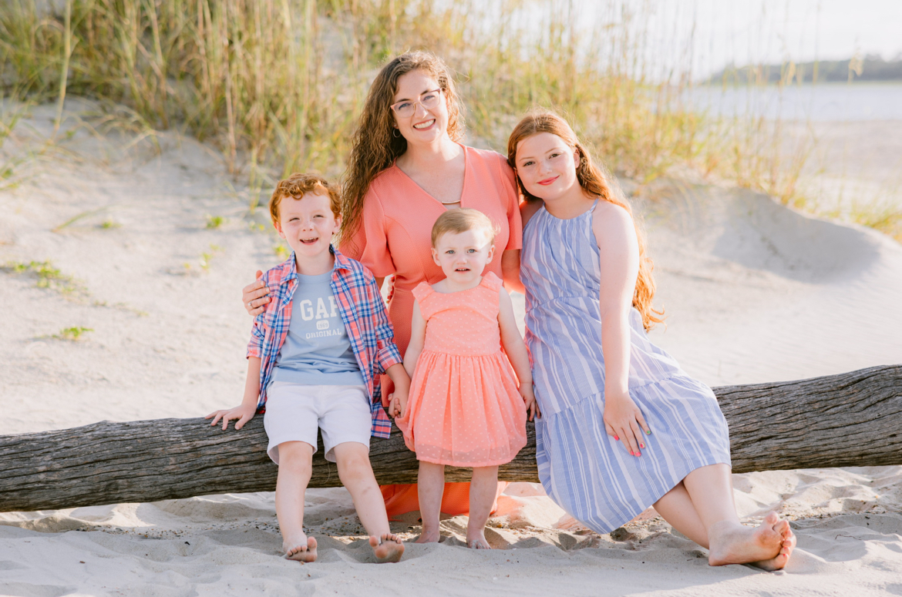

Hello everyone and welcome to my page! My name is Rachel Belew. For the last two years, I have been teaching 5th grade math at Oak Grove Elementary in Whitley County. This will be my 3rd year teaching and I can not believe how fast it has went by! Next year, I will be teaching 6th grade social studies and science.

Me and my children at our favorite place
Outside of school, I am a single momma to 3 kiddos (10, 5, and 2). As you can imagine, they keep me busy. I spend a lot of time at the ball field or waiting on dance classes. But I love every minute of it. We travel A LOT together. Tybee Island is our FAVORITE place in the whole world. We have 3 dogs and 5 outside cats. Besides my babies, all I need is coffee and Jesus!
First trip to Disney!
I completed my Rank II in Literacy in the summer of 2024. I graduated with honors and decided to immediately go back and earn my Rank I. I am currently working on my Rank I in Library Science. After completing this, I thought about going back one more time for middle school math.